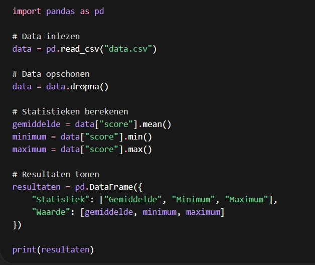

Project: Data-analyse met scripting (Python)
Beschrijving
Voor dit project heb ik een script ontwikkeld in Python dat automatisch data verwerkt, analyseert en overzichtelijk weergeeft in tabellen.
Het doel was om ruwe data om te zetten in bruikbare inzichten zonder manueel werk.
Doelstellingen
- Data automatisch inlezen (CSV-bestanden)
- Gegevens verwerken en opschonen
- Statistieken berekenen (gemiddelde, minimum, maximum)
- Resultaten weergeven in tabellen
- Script herbruikbaar maken
Gebruikte technologieën
- Python
- Pandas
- Visual Studio Code
Werking van het script
Het script voert de volgende stappen uit:
- Leest een CSV-bestand in
- Filtert foutieve of ontbrekende data
- Berekent statistieken
- Toont resultaten in tabelvorm
Codevoorbeeld

Voorbeeld output
| Statistiek |
Waarde |
| Gemiddelde |
75.4 |
| Minimum |
50 |
| Maximum |
98 |
Resultaat
Met dit script kan data in enkele seconden geanalyseerd worden, wat tijd bespaart en fouten vermindert.
De output is duidelijk en bruikbaar voor verdere rapportage.
Wat ik geleerd heb
- Werken met data in scripts
- Automatiseren van repetitieve taken
- Gebruik van tabellen voor overzicht
- Debuggen en optimaliseren van code
Mogelijke uitbreidingen
- Grafieken toevoegen (visualisatie)
- Webinterface bouwen
- Data automatisch ophalen van een API
- Exporteren naar Excel